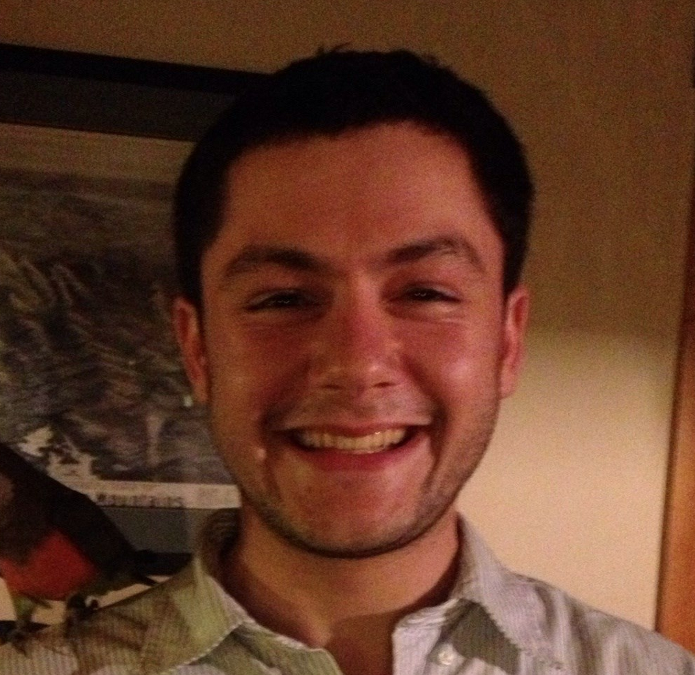

Take control of a world and its geometry in Flatland, a puzzle-platformer game for Mac and PC that will test your wit and skills. Transform 3D objects and their 2D counterparts to traverse the universe of Flatland, the famed satirical novella by Edwin Abbott Abbott.
Daniel Hudson (@dmh1218)
Level designer and feature implementation. I love world music, pirates, the maker movement, and everything else! I want to use cutting edge technology and great storytelling to create new game experiences and make the world a more interesting place.

Jared Bronen (@jbronen)
Level design and editing. I love filmmaking, interactive fiction, and playing great games. I want to build tools everyone can use to write and design their own games. My favorite pizza is New Haven Style Pizza
Shriya Nevatia (@shriyanevatia)
Art, audio, and marketing. I love vegetarian food, UX design, and Bollywood dance. I want to work in educational tech to help people challenge themselves and unleash their creativity!
Brian O'Keefe (@bokeef01)
Feature design and implementation. I love sports, electrical engineering, and all things Chicago. I want to make games that people like to play!